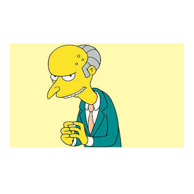

Mr. Burns
Charles Montgomery ”Monty” Burns on Springfieldin ydinvoimalan omistaja, Homer Simpsonin pomo sekä koko sarjan tunnetuin pääpahis.

Harry Shearer
Meemit



Charles Montgomery ”Monty” Burns on Springfieldin ydinvoimalan omistaja, Homer Simpsonin pomo sekä koko sarjan tunnetuin pääpahis.